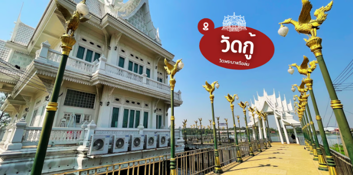
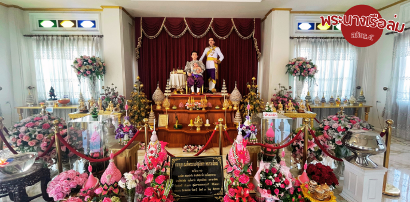
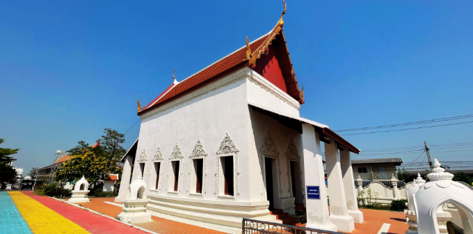
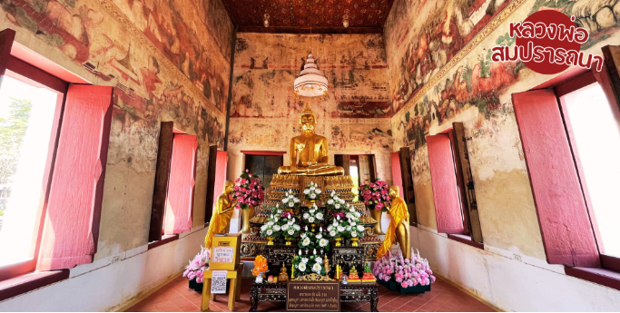
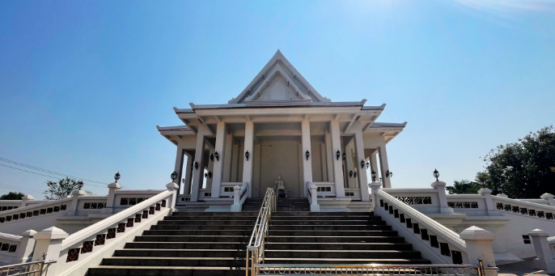
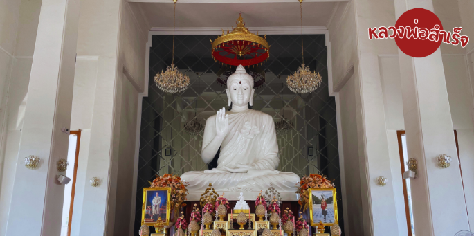
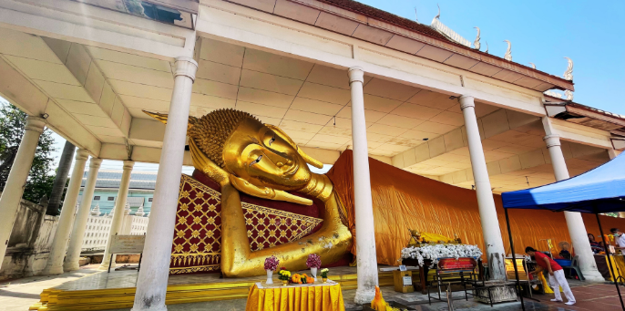
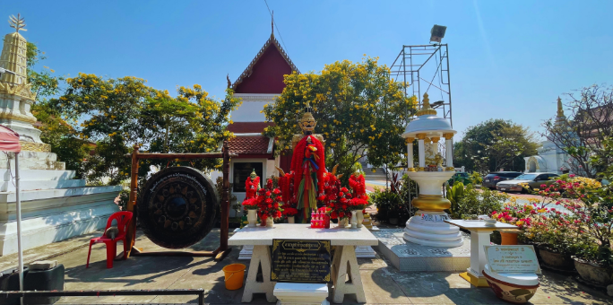

วัดกู้ (วัดพระนางเรือล่ม)

วัดกู้ หรือวัดพระนางเรือล่ม เดิมชื่อว่า วัดท่าสอน ในอดีตกาล เกิดอุปัทวะเหตุเรือล่มลงใกล้วัดท่าสอน และเป็นจุดกู้เรือพระที่นั่งสมเด็จพระนางเจ้าสุนันทากุมารีรัตน์พระบรมราชเทวี พร้อมพระศพ ไว้ที่วัดแห่งนี้ เลยได้เปลี่ยนชื่อใหม่เป็น "วัดกู้" เพื่อเป็นอนุสรณ์แก่สมเด็จพระนางเจ้าสุนันทากุมารีรัตน์พระบรมราชเทวี เมื่อ พ.ศ.2423 สมัยรัชกาลที่ 5

วัดกู้ ตั้งอยู่อำเภอปากเกร็ด จังหวัดนนทบุรี เป็นอีกหนึ่งวัดดังที่มีประวัติมายาวนาน นอกจากพระตำหนักของสมเด็จพระนางเจ้าสุนันทากุมารีรัตน์พระบรมราชเทวี ยังมีอุโบสถหลวงพ่อสมปรารถนา วิหารหลวงพ่อสมหวัง พระนอนองค์ใหญ่ หรือพระพุทธรูปปางไสยาสน์ (หลวงพ่อสมหวัง) ท้าวเวสสุวรรณ

อันดับแรก เราต้องเข้าไปกราบไหว้พระในอุโบสถ มีชื่อว่า หลวงพ่อสมปรารถนา เป็นอุโบสถที่เก่าแก่


ต่อมา เข้ามาวิหารหลวงพ่อสำเร็จ องค์สีขาวสง่างามมากๆค่ะ ภายในวิหารกว้างขวาง และเงียบสงบ สามารถขอพรให้สมหวังทุกสิ่ง


ที่วัดกู้ มีพระนอนองค์ใหญ่ หรือพระพุทธรูปปางไสยาสน์ (หลวงพ่อสมหวัง) ให้กราบไหว้บูชา ขอพรเสริมสิริมงคล เลี้ยวเข้ามาภายในวัด จะพบเลย อยู่ด้านซ้ายมือ

นอกจากนี้ ยังมีท้าวเวสสุวรรณ พระพิฆเนศ และไอ้ไข่ ให้กราบไว้บูชา ตามความเชื่อของแต่ละท่านได้